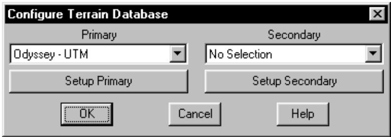
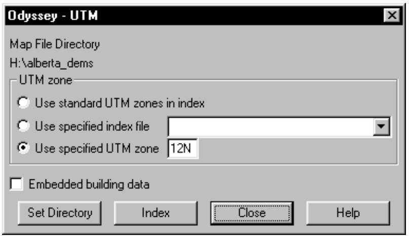
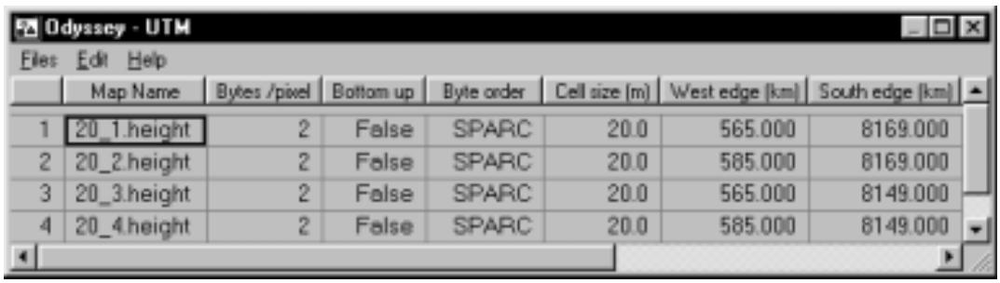
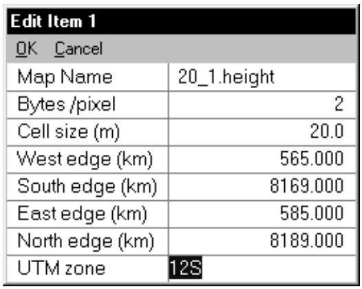
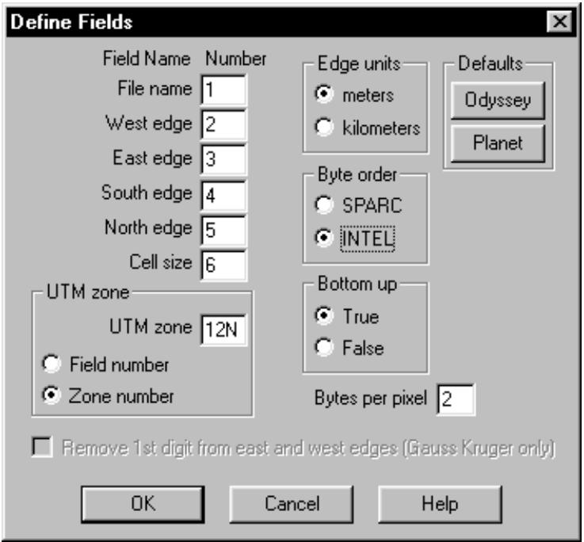
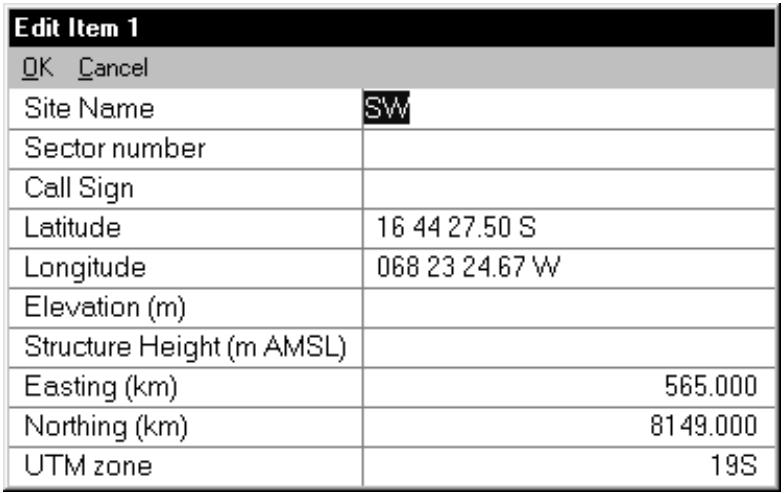
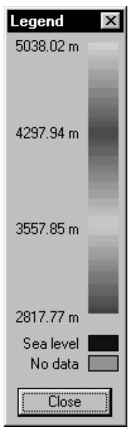
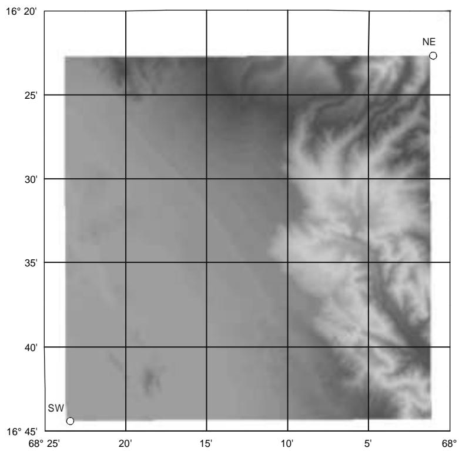
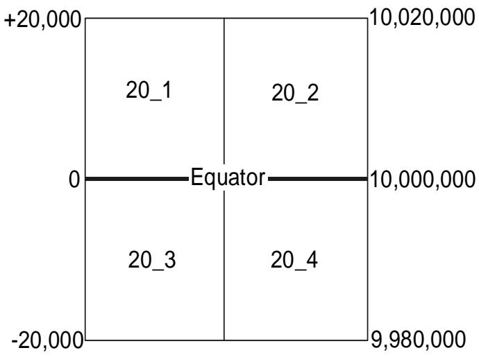
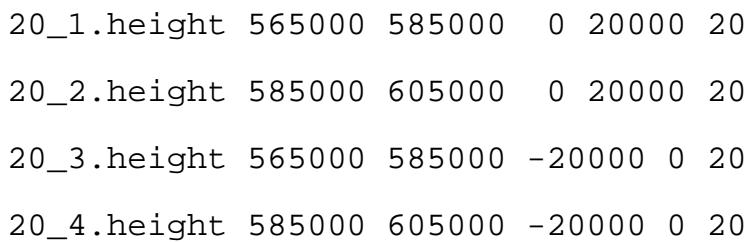

#3 textPhép chiếu UTM chia thế giới thành 60 khu vực hoặc đoạn. Mỗi khu vực bao phủ 6 độ kinh độ. Khu vực đầu tiên bắt đầu tại đường đổi ngày quốc tế và các số tăng dần về phía đông. Tại trung tâm của mỗi khu vực là một kinh tuyến trung tâm, là tham chiếu đo lường cho khu vực đó.
#4 textCác đường lưới đông-tây được gắn vào kinh tuyến trung tâm ở góc vuông và đi theo các đường tròn lớn ra xa khỏi nó. Đây là các đường có hằng số northing và không đi theo các vĩ tuyến, vì các vĩ tuyến không phải là đường tròn lớn. Cuối cùng, các đường lưới bắc-nam được vẽ như các đường có hằng số easting.
#5 textTọa độ UTM tương đối với một số khu vực cụ thể và được biểu thị dưới dạng tọa độ easting hoặc X và tọa độ northing hoặc Y. Easting là khoảng cách từ kinh tuyến trung tâm dọc theo các đường lưới đông-tây sử dụng quy ước dấu dương đông âm tây. Để tránh số âm, một easting giả 500.000 mét được gán cho kinh tuyến trung tâm.
#6 textNorthing là khoảng cách từ xích đạo dọc theo các đường lưới bắc-nam sử dụng quy ước dấu dương bắc - âm nam. Để tránh số âm ở bán cầu nam, một northing giả 10.000.000 mét được gán cho xích đạo. Northing giả này tạo ra sự mơ hồ trong hệ tọa độ này. Xem xét tọa độ UTM:
#7 textkhu vực = 12, easting = 575 km, northing = 5600 km.
#8 textSử dụng mốc WGS84, điều này chuyển đổi thành:
#9 textvĩ độ 50 32 49.64 N và kinh độ 109 56 29.12 W ở bắc bán cầu hoặc
#10 textvĩ độ 39 44 47.78 S và kinh độ 110 07 28.56 W ở nam bán cầu
#11 textĐể giải quyết sự mơ hồ này, chương trình Pathloss thêm hậu tố N hoặc S vào khu vực UTM. Ví dụ: 12N hoặc 12S. Northing giả này gây ra một phức tạp bổ sung khi cơ sở dữ liệu địa hình trải dài qua xích đạo. Northing 20 và 9980 km đại diện cho các điểm cách xích đạo 20 km về phía bắc và phía nam tương ứng.
#12 titleMô tả Cơ sở dữ liệu địa hình Planet
#13 textĐịnh dạng cơ sở dữ liệu địa hình Planet bao gồm một mảng độ cao đều đặn. Mỗi độ cao đại diện cho độ cao trung bình trong một ô vuông. Tệp được sắp xếp theo các hàng chạy từ tây sang đông bắt đầu từ góc Tây Nam hoặc Tây Bắc của tệp. Thông thường, các độ cao được lưu trữ dưới dạng số nguyên 2 byte. Thứ tự byte có thể là INTEL (little endian) hoặc SPARC (big endian)
#14 textThông tin tham chiếu địa lý được chứa trong hai tệp bên ngoài: một tệp chỉ mục và một tệp chiếu.
#15 textMột ví dụ về tệp chiếu được đưa ra dưới đây. Định dạng sẽ thay đổi tùy thuộc vào phép chiếu. Ví dụ này biểu thị phép chiếu UTM trong khu vực 18 sử dụng mốc WGS84.
#16 textWGS-84
#17 text18
#18 textUTM
#19 textTệp chỉ mục xác định các cạnh của cơ sở dữ liệu địa hình và chỉ định kích thước ô. Một mục nhập được cung cấp cho mỗi tệp. Một ví dụ về một dòng trong tệp chỉ mục được đưa ra dưới đây.
#23 textCác cạnh đông và tây là các easting UTM và các cạnh bắc và nam là các northing UTM.
#24 titleMặc định Địa lý
#25 textBước đầu tiên là đặt mốc hoặc ellipsoid tương ứng với tệp chiếu. Chọn Configure - Geographic Defaults. Đặt hệ tọa độ lưới (phép chiếu) thành UTM.
#26 titleCấu hình
#27 textChương trình Pathloss sử dụng một trình đọc cơ sở dữ liệu địa hình chung được phát triển cho định dạng tệp Logica Odyssey. Các tệp độ cao Planet có thể được đọc trực tiếp. Không cần chuyển đổi tệp. Quy trình thiết lập được mô tả dưới đây:
#28 textChọn Configure - Terrain Database và sau đó chọn Odyssey UTM.
#29 image

#30 textNhấp vào nút Setup Primary để cấu hình cơ sở dữ liệu địa hình.
#31 titleĐặt thư mục
#32 textNhấp vào nút Set Directory và trỏ đến thư mục (folder) chứa các tệp dữ liệu Planet.
#33 titleCác phương pháp khu vực UTM
#34 image

#35 textTrong nhiều trường hợp, dữ liệu địa hình được cung cấp trong một tệp duy nhất. Các cạnh đông và tây có thể mở rộng ra ngoài ranh giới khu vực UTM tiêu chuẩn. Trong những trường hợp này, khu vực UTM phải được chỉ định bằng một trong hai phương pháp sau:
#36 textChọn tùy chọn "Use specified index file" và sau đó chọn tệp từ danh sách thả xuống. Khu vực UTM liên quan đến tệp đã chọn sẽ được sử dụng và chỉ tệp đã chọn sẽ được sử dụng ngay cả khi chỉ mục chứa nhiều tệp.
#37 textChọn tùy chọn "Use specified UTM zone" và nhập số khu vực có hậu tố N hoặc S. Nếu N hoặc S không được chỉ định, khu vực sẽ mặc định là bắc bán cầu. Hậu tố S phải được chỉ định cho nam bán cầu.
#38 textTrong tất cả các trường hợp khác, sử dụng tùy chọn "Use standard UTM zones in index".
#39 titleDữ liệu tòa nhà nhúng
#40 textThông thường, độ cao được nội suy từ bốn độ cao gần nhất đến điểm quan tâm. Nếu dữ liệu địa hình chứa dữ liệu tòa nhà hoặc tán cây nhúng, hãy chọn tùy chọn "Embedded building data". Độ cao ô sẽ được sử dụng trong trường hợp này.
#41 titleChỉ mục
#42 image

#43 textNhấp vào nút Index để truy cập chỉ mục bản đồ kỹ thuật số. Dữ liệu có thể được nhập thủ công. Chọn Edit- Add trên thanh menu Index và nhập dữ liệu như được hiển thị trên trang tiếp theo. Thông tin này có sẵn từ các tệp chỉ mục Planet. Khi nhập dữ liệu hoàn tất, nhấp OK.
#45 textHai trường bổ sung phải được đặt trực tiếp trên biểu mẫu nhập dữ liệu Grid. Đó là:
#46 table

#47 textBottom up Trường này xác định xem tệp bắt đầu ở góc tây nam hay góc tây bắc. Nhấp đúp vào trường này để thay đổi cài đặt thành true hoặc false. Nếu nền mạng hoặc chế độ xem địa hình bị lộn ngược, hãy thay đổi trường này.
#48 textByte order Điều này tương đương với "big and little endian". Nhấp đúp vào trường này để thay đổi trường thành SPARC (big endian) hoặc INTEL (little endian).
#49 titleNhập chỉ mục
#50 image

#51 textMột tính năng nhập văn bản tổng quát có thể được tùy chỉnh để đọc các tệp chỉ mục Planet. Chọn Files - Index để mở hộp thoại định nghĩa trường.
#52 textNhấp vào nút Planet để có được các cài đặt mặc định cho các chỉ mục Planet.
#53 textLưu ý rằng các tùy chọn "Byte order" và "Bottom up" có thể phải được xác định bằng thực nghiệm.
#54 textNhập hậu tố N hoặc S của khu vực UTM và chọn "Zone number". Một chỉ mục Planet không bao gồm số khu vực UTM. Nếu khu vực UTM được bao gồm trong tệp chỉ mục, hãy nhập số trường cho khu vực UTM và chọn tùy chọn "Field number".
#55 textCài đặt "Bytes per pixel" luôn là 2 và "Edge units" luôn là mét đối với Planet.
#56 textNhấp OK và tải tệp chỉ mục Planet.
#57 titleKiểm tra Cài đặt Cơ sở dữ liệu Địa hình
#58 textĐiều này được thực hiện tốt nhất trong mô-đun Network. Tạo hai địa điểm tại các góc tây nam và đông bắc của phạm vi các tệp cơ sở dữ liệu địa hình. Tham khảo chỉ mục để biết tọa độ UTM. Chọn Files - New để xóa màn hình. Chọn Site Data - Site List và sau đó chọn Edit - Add.
#59 table

#60 textNhập easting, northing và các khu vực UTM. Vĩ độ sẽ được xác định tự động.
#61 textKhi cả hai địa điểm đều có trên màn hình, chọn Site Data - Create background.
#62 chart

#63 chart

#64 titleCác vấn đề có thể xảy ra
#65 titleNền không được tạo
#66 list
Tên tệp trong tệp chỉ mục không giống với các tệp cơ sở dữ liệu thực tế. Các phần mở rộng có thể bị thiếu hoặc khác. • Các khu vực UTM trong tệp chỉ mục không đúng hoặc thiếu hậu tố N-S.
Phương pháp UTM sai. Khu vực được chỉ định không chính xác hoặc thiếu hậu tố N-S.
Cài đặt SPARC - INTEL sai.
Thư mục tệp bản đồ được đặt không chính xác.
MSI PLANET Cơ sở dữ liệu địa hình Phép chiếu UTM
#67 textĐộ cao không đúng hoặc màn hình hiển thị không đầy đủ
#68 title• Cài đặt SPARC - INTEL sai.
#69 textMàn hình hiển thị bị lộn ngược. Điều này sẽ rất rõ ràng nếu cơ sở dữ liệu có nhiều ô dọc.
#70 title• Cài đặt bottom - up trong chỉ mục sai.
#71 textCân nhắc về Xích đạo
#72 titleCác cơ sở dữ liệu địa hình trải dài qua xích đạo yêu cầu cân nhắc đặc biệt. Hai tệp chỉ mục được hiển thị bên dưới. Cả hai đều bao gồm bốn tệp dữ liệu địa hình bao phủ một khu vực 20 km x 20 km. Hai trong số các tệp này mở rộng 20 km phía trên xích đạo và hai tệp còn lại mở rộng 20 km phía dưới xích đạo.
#73 chart

#74 textChỉ mục đầu tiên được tham chiếu đến bắc bán cầu. Các northing cạnh bản đồ là +20.000 mét, 0 và -20.000 mét. Trong trường hợp này, một khu vực UTM bắc bán cầu phải được chỉ định trong cả chỉ mục và phương pháp khu vực UTM.
#75 textChỉ mục thứ hai được tham chiếu đến nam bán cầu. Northing của xích đạo là 10.000.000 mét. Các northing cạnh bản đồ là 9.980.000 mét, 10.000.000 mét
#76 table

#77 textvà 10.020.000 mét. Trong trường hợp này, một khu vực UTM nam bán cầu phải được chỉ định trong cả chỉ mục và phương pháp khu vực UTM.